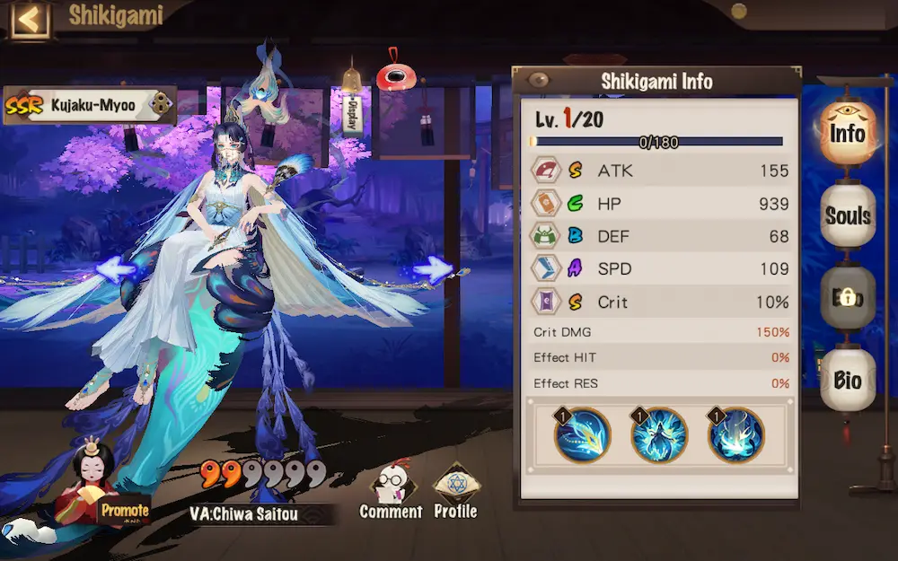

Onmyoji Global
SSR Kujaku-Myoo
Skill 1: Plume Dart (Orbs: 0)
Conjures darts of plumes to strike 1 enemy, dealing damage equal to 100% of her ATK with a 30% Base Chance of inflicting Disarm. While she's performing a Train-rattling, changes the skill to Plume Razor with its skill level equal to the skill level of Plume Dart.
- Lv.2 Increases damage to 105%
- Lv.3 Increases damage to 110%
- Lv.4 Increases damage to 115%
- Lv.5 Increases damage to 125%
- Train-rattling: [General, Mark] Prevents her from gaining Peacock's Plume. Increases her Crit by 40% and her Effect HIT by 75%.
- Base Chance: Chance is affected by Effect HIT.
- Disarm: Prevents the unit from using a normal attack. When this is dispelled, reduces the unit's normal attack damage by 20% for 1 turn.
Plume Razor (Orbs: 0)
Turns her feather fan into a sword to attack 1 enemy, dealing damage equal to 150% of her ATK with a 100% Base Chance of inflicting Disarm lasting 1 turn.
- Lv.2 Increases damage to 160%
- Lv.3 Increases damage to 170%
- Lv.4 Increases damage to 180%
- Lv.5 Increases damage to 200%
Skill 2: Ascendant (Passive)
Effective Exclusively. When the battle starts and at the end of her turn, gains her 1 Peacock's Plume stack. When the non-summoned ally entity with the lowest HP takes damage, has a 30% Base Chance of inflicting Disarm on the source of the damage. Whenever she gains 5 Peacock's Plume stacks, gains her 1 Tail Plume stack and increases her SPD by 50% for I turn. If she has 5 Peacock's Plume stacks at the start of her turn, she ends Plume Field and consumes all Peacock's Plume stacks to perform a Train-rattling for 3 turns.
- Lv.2 When she starts performing a Train-rattling, removes all debuffs from her. If a Controlling Effect is removed this way, the duration of her Train-rattling is reduced to 1 turn.
- Lv.3 While she's performing a Train-rattling, grants her immunity to debuffs and damage on her turn.
- Lv.4 Whenever she gains 1 Peacock's Plume stack, dispels 1 debuff from her.
- Lv.5 While she's performing a Train-rattling, each 1% of Effect HIT she has increases her ATK by 1%. When she finishes performing a Train-rattling, immediately gains her 1 Peacock's Plume stack.
- Peacock's Plume: [Buff, Mark] Each stack increases her Effect HIT by 15%.
- Tail Plume: [Genera|, Mark] Consumed when using Sundering Dance to double the strikes.
- Train-rattling: [Genera|, Mark] Prevents her from gaining Peacock's Plume. Increases her Crit by 40% and her Effect HIT by 75%.
- Effective Exclusively: If multiple shikigami of the same name are in your lineup, only one of those shikigami's skills will be effective.
- Base Chance: Chance is affected by Effect HIT.
- Disarm: Prevents the unit from using a normal attack. When this is dispelled, reduces the unit's normal attack damage by 20% for 1 turn.
- Controlling Effect: Freeze, Sleep, Confuse, Taunt, Silence, Bound, Disarm, Morph, Daze, Provocation, Deep Freeze, Shadowbound, and Frostbound are controlling effects. The last six cannot be dispelled. Frostbound cannot be removed.
Skill 3: Alluring Realm (Orbs: 2)
Effective Exclusively. Creates a Plume Field that's sustainable for 1 turn. Enemies in the field have 15% reduced Effect RES and a 15% chance to miss their targets when using normal attacks. While she's performing a Train-rattling, changes the skill to Sundering Dance with its skill level equal to the skill level of Alluring Realm.
- Lv.2 Increases Plume Field's sustainable turns to 2 turns.
- Lv.3 Increases Plume Field's Effect RES reduction to 30% and its chance of causing enemies to miss their targets to 30%.
- Lv.4 When she uses the skill not as Upper Hand, gains her 1 Peacock's Plume stack and a 40% Base Chance of inflicting Disarm on enemies.
- Lv.5 Upper Hand: Creates a Plume Field.
- Tail Plume: [Genera|, Mark] Consumed when using Sundering Dance to double the strikes.
- Train-rattling: [Genera|, Mark] Prevents her from gaining Peacock's Plume. Increases her Crit by 40% and her Effect HIT by 75%.
- Effective Exclusively: If multiple shikigami of the same name are in your lineup, only one of those shikigami's skills will be effective.
- Base Chance: Chance is affected by Effect HIT.
- Upper Hand: Take action at the start of battle.
Sundering Dance (Orbs: 3)
Has a 100% Base Chance of inflicting Disarm lasting 2 turns. Launches a 4-strike attack on all enemies, dealing damage equal to 45% of her ATK on each strike. Then inflicts an additional 2 follow-up strikes, dealing damage equal to 45% of her ATK on each strike.
- Lv. 2 Increases the follow-up damage to 50%.
- Lv. 3 Increases the follow-up damage to 55%.
- Lv. 4 Increases the follow-up damage to 60%.
- Lv. 5 The follow-up damage ignores DEF by 240.
RR-Team